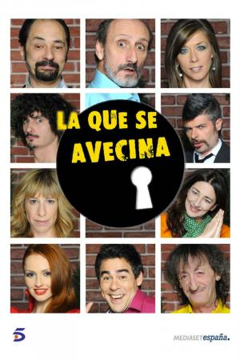

La que se avecina |
||
|---|---|---|
|  | Sinopsis: Mirador de Montepinar, un complejo residencial situado en la periferia de una gran ciudad. Entre ellos destacan una familia caótica, unos recién casados, una "Bridget Jones" española, el "pesado oficial" del vecindario, dos prejubilados, un antisocial, un mileurista, un galán de telenovela, dos okupas y un matrimonio con niños. |
Director:Laura Caballero, Alberto Caballero Reparto:Jordi Sánchez, José Luis Gil, Ricardo Arroyo Año: 2007 Duracion:60 min cada capitulo Pais:España |
Criticas Profesionales:actimelgibsonUna serie que arranca de otra para terminar desmarcándose de forma bestial, en "Aquí no hay quien viva" se vivían situaciones esperpénticas pero con personajes que aún conservaban cierta dignidad humana, aquí se pierden totalmente los papeles y se dejan de vivir situaciones esperpénticas, es el esperpento propio el que vive a través de los personajes que quedan lejos ya |
Trailer |
Obtener:AlquilarComprar |
Registrate/Iniciar Sesion